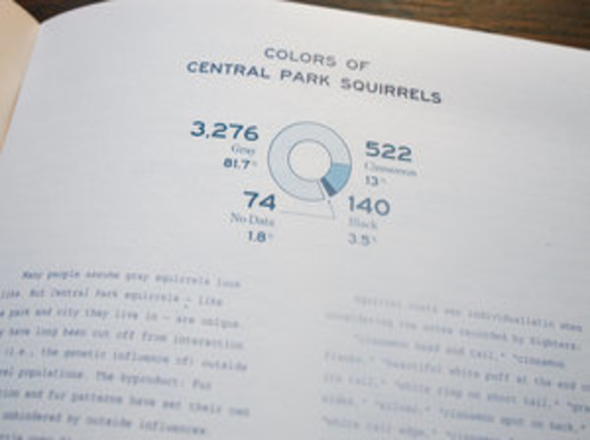

View, Add, or Update Squirrel Sightings
Navigate to the sightings where you can: view a list of them all, update one from the list, or even add your own! In 2018, over 3,000 sightings were collected in NYC. The original data, from NYC OpenData, can be found here.

Map of Squirrel Sightings
Zoom in and out of this map to see 100 squirrel sightings plotted. The map starts in Central Park.

Statistics about Squirrel Sightings
Curious about certain demographics of the squirrels sighted so far? Want to see a summary of facts for these squirrels?
